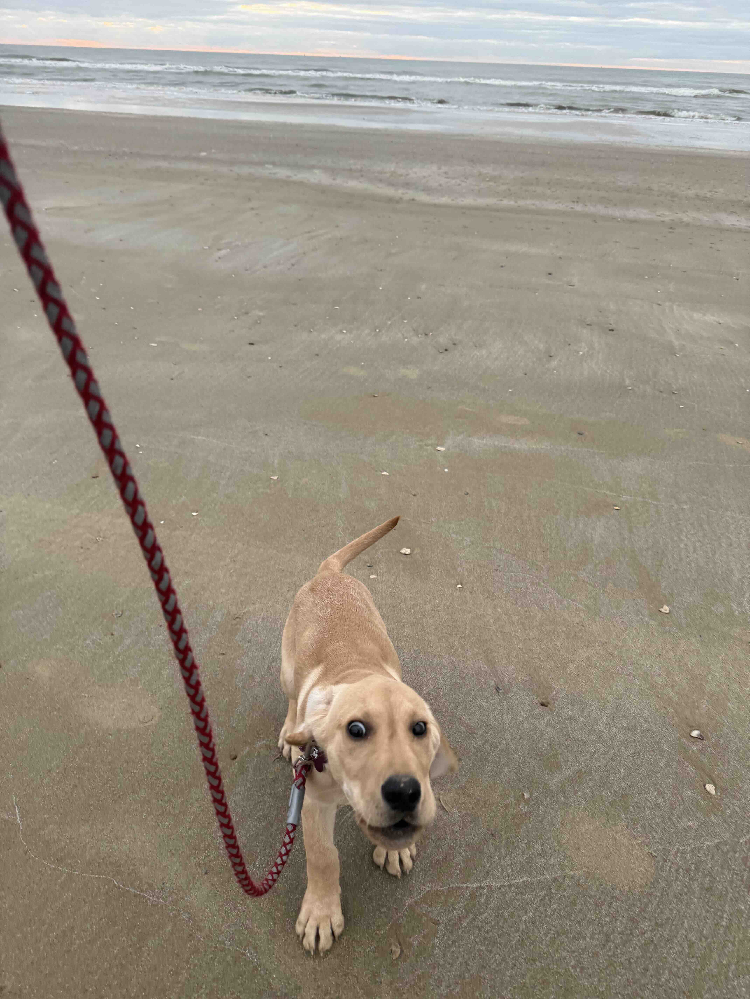

This tutorial walked through the full arc of molecular phylogenetics: from pulling fish out of the Gulf of Mexico, to extracting DNA, aligning COI sequences, and building trees with three different methods. The result is a clear picture of how Gulf species are related, which ones share recent common ancestors, and which ones just happen to share the same water. Evolutionary history turns out to matter for everything from fisheries management to conservation planning. A short stretch of mitochondrial DNA, read carefully, can answer questions that decades of looking at scales and fin rays could not.
